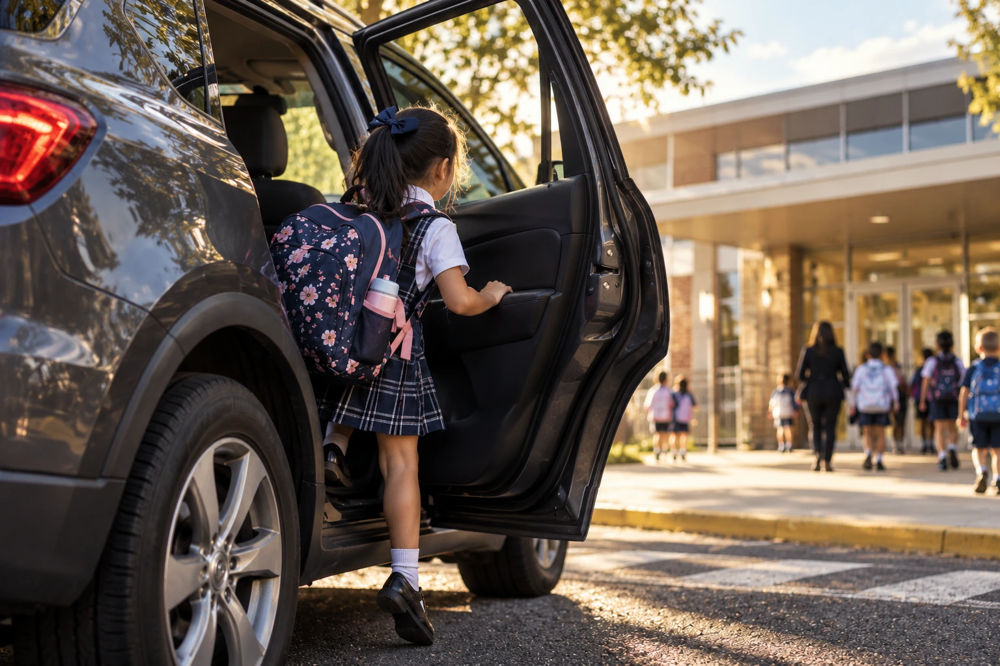
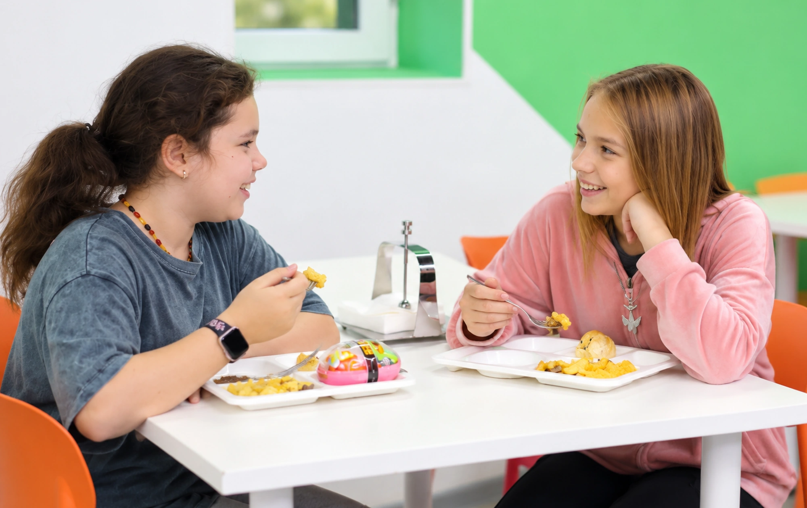
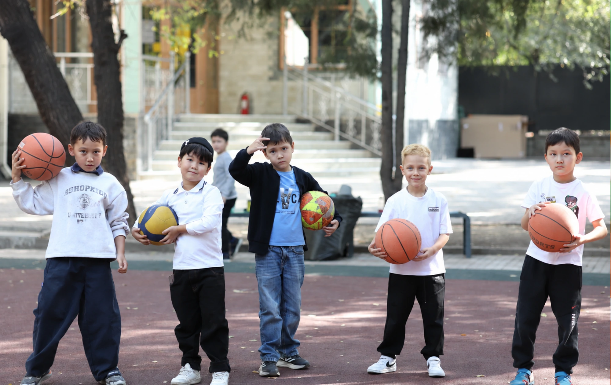
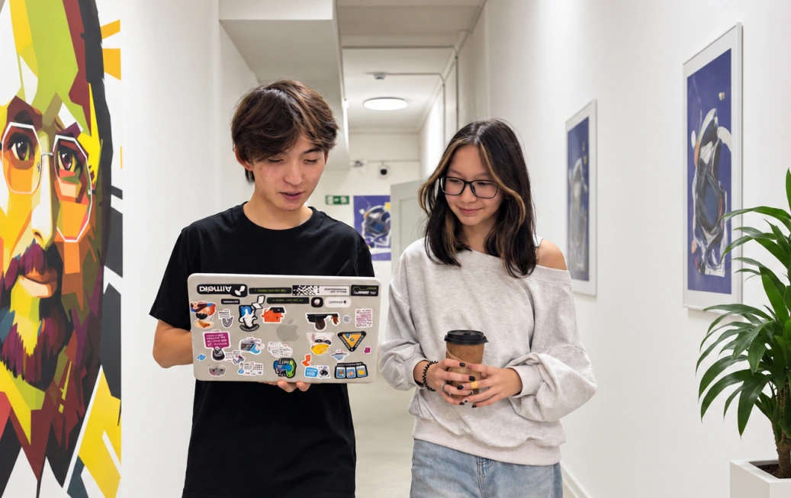
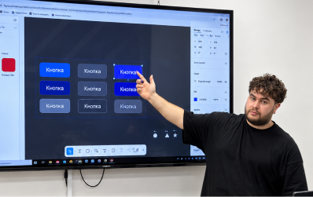
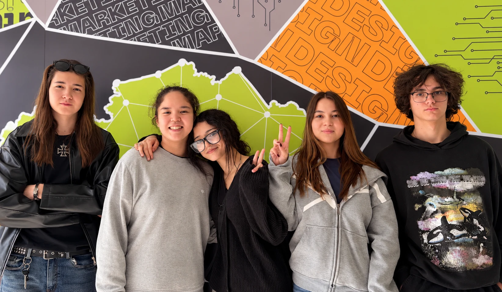
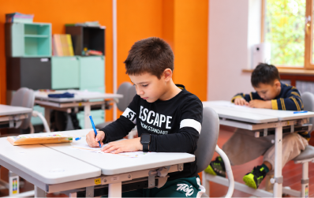
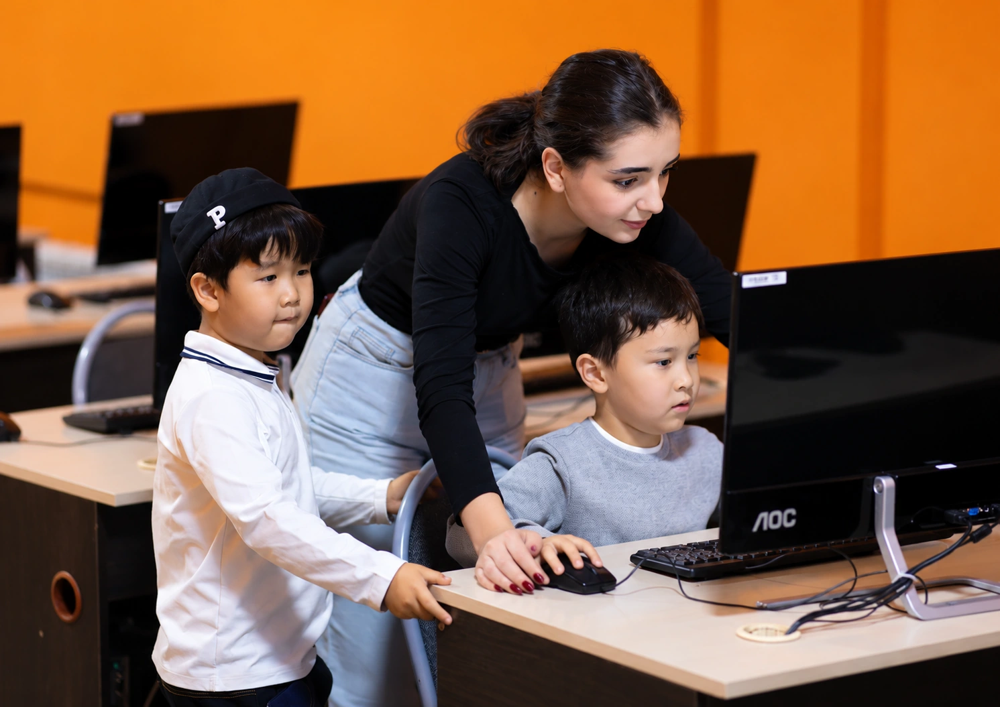
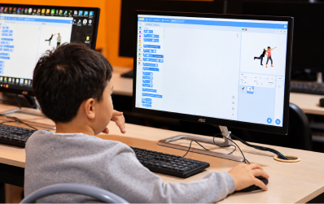

IT-продлёнка Академии ШАГ
Группа продлённого дня с IT и английским · 1-6 классы
После школы - к нам. Уроки сделаны, вечер - для семьи
- 1–6 класс
- пн–пт 13:00–17:30
- Старт — январь 2027
- Группы до 15 детей
Запишитесь на экскурсию


Почему продлёнка в Академии
Каждый день — полезный спецпредмет:
IT-программа Академии, английский, шахматы.
Домашнее задание - на продленке, а дома общение с семьей
Обед и полдник по расписанию, чтобы дети вовремя подкреплялись в течение дня.
Время на свежем воздухе, отдых и свободные игры без перегруженного расписания.
У каждой группы свой куратор на всю смену.
Просторные и проветриваемые помещения
Как проходит день
Уроки по 40 минут, у каждой группы 3 урока в день. Зимой прогулку заменяют подвижные и настольные игры в помещении.
- 13:00–13:40Приход, сбалансированный горячий обед
- 13:40–14:20Прогулка, отдых
- 14:20–15:00Домашка (куратор + AI)
- 15:10–15:50Домашка
- 15:50–16:10Полезный полдник
- 16:10–16:50Спецпредмет
- 16:50–17:30Свободное время, игры
- 17:30Уход домой
IT-программа внутри продлёнки
2–6 класс — «Малая компьютерная Академия + AI»
Скачать подробную программуПрограмма Малой Компьютерной Академии — в пятёрке лучших проектов по развитию человеческого потенциала по версии ЮНЕСКО и ITU.
Безопасность и трансфер ребенка
Соседняя школа
Дневная смена (школа — Академия)
Куратор забирает детей из школы и приводит в Академию
Утренняя смена (Академия — школа)
Куратор отводит детей в школу

Другие школы
Дневная смена (школа — Академия)
Родители привозят сами или развозка сторонним сервисом
Утренняя смена (Академия — школа)
Родители отвозят сами или развозка сторонним сервисом
Развозку сторонним сервисом помогаем организовать, оплачивают её родители отдельно.
Ребёнка отдаём только родителям или лицам из письменного заявления родителей, с проверкой документа.
В филиале есть аптечка, куратор знает порядок действий: звонок родителям, при необходимости — вызов скорой.
Задержаться до 18:00 можно по договорённости с филиалом.

Мы кормим детей горячим сбалансированным обедом и полезным полдником. В тарелке есть белок и овощи: нормальная еда, после которой ребёнок сыт до вечера.

За партой дети сидят только на уроках. Всё остальное время они двигаются: гуляют на свежем воздухе, играют в подвижные игры. Места в академии много, поэтому никто не сидит весь день в тесной комнате. Ребёнок тратит энергию у нас и приходит домой спокойным.
О нас
Академия ШАГ

Компьютерная Академия ШАГ (IT STEP) обучает с 1999 года: основное и дополнительное IT-образование для детей и взрослых.
Более 450 000 студентов получили IT-образование в Академии ШАГ; выпускники работают в более чем 1500 компаниях по всему миру.

Авторские методики, преподаватели-практики, упор на практику; искусственный интеллект интегрирован в каждую программу.
Филиалы — авторизованные учебные центры Cisco и Autodesk.

Программа Малой Компьютерной Академии вошла в пятёрку лучших проектов по развитию человеческого потенциала по версии ЮНЕСКО и ITU (Международный союз электросвязи ООН).
Подход, который мы переносим из STEP SCHOOL

STEP SCHOOL — частная школа полного дня 1–9 классов с углублённым IT и английским; опыт крупнейшего IT-образовательного холдинга, который работает в Казахстане и ещё 22 стране.

Подход школы: «возвращаем семье качественное время» — все задачи и проекты завершаются в стенах школы под контролем менторов.
Ошибка — не повод для наказания, а этап развития; никаких наказаний, только поддержка.

Инструменты искусственного интеллекта официально используются в учебном процессе как справочный ресурс под контролем педагога.
Учим управлять технологиями будущего, а не просто быть их потребителями.
Частые вопросы
Ребёнок будет делать домашку с AI?
Домашку ребёнок делает сам с куратором. Мы учим пользоваться AI с умом: чтобы разобраться в теме, а не списать ответ
С какого возраста берёте?
С 1 класса. Набираем по классу: шестилетка-первоклассник идёт в группу 1 класса.
Как ребёнок попадёт к вам после школы?
Из соседней школы забирает куратор. Из других школ — родители или развозка сторонним сервисом, которую мы помогаем организовать.
Кто может забрать ребёнка?
Родители или лица, указанные в письменном заявлении родителей, с проверкой документа. Без заявления ребёнка не отдаём.
Есть ли медик?
Штатного медика нет. В филиале аптечка, куратор знает порядок: звонок родителям, при необходимости — вызов скорой.
Что зимой вместо прогулки?
Подвижные и настольные игры в помещении.
Работаете в каникулы и праздники?
В праздничные дни продлёнка не работает. На каникулах вместо неё работает лагерь Академии.
Школы отменили уроки из-за погоды?
Продлёнка работает в обычном режиме. Приводить ли ребёнка, решают родители.
Мой ребёнок учится во вторую смену
Есть утренняя смена 8:30–12:50, после неё ребёнок идёт в школу.
Можно забрать позже 17:30?
До 18:00 — по договорённости с филиалом.
Пересчитываете оплату за месяц с праздниками?
Нет, оплата за месяц фиксированная.